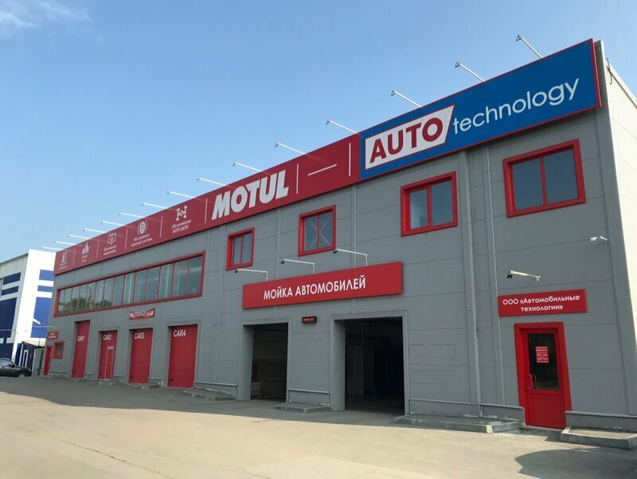

2ГИС
Оценок: 50 · Отзывов: 42
Открыть отзывыПроверено 14.11.2026Самара / Куйбышевский район
Компьютерная диагностика, замена масла, ремонт ходовой части и АКПП.
+7 (846) 255‒01‒25Уточните часы по телефону

Для вашего автомобиля
Найдите нужную работу или позвоните, чтобы обсудить ваш вопрос.
от 800 ₽
от 2 000 ₽
от 800 ₽
от 800 ₽
от 1 400 ₽
от 1 800 ₽
от 1 800 ₽
от 1 200 ₽
от 1 600 ₽
от 1 600 ₽
от 900 ₽
от 1 500 ₽
от 3 000 ₽
от 1 200 ₽
от 1 500 ₽
от 800 ₽
от 1 200 ₽
750 ₽
от 1 200 ₽
от 600 ₽
от 600 ₽
от 600 ₽
от 1 600 ₽
от 1 100 ₽
от 800 ₽
от 3 500 ₽
от 3 500 ₽
от 3 500 ₽
от 800 ₽
от 7 000 ₽
от 7 000 ₽
от 6 500 ₽
от 2 000 ₽
от 800 ₽
от 600 ₽
от 400 ₽
от 600 ₽
от 800 ₽
от 1 000 ₽
от 1 600 ₽
от 500 ₽
от 300 ₽
Уточняйте по телефону
Уточняйте по телефону
Уточняйте по телефону
Уточняйте по телефону
Уточняйте по телефону
Уточняйте по телефону
Уточняйте по телефону
Уточняйте по телефону
По этому запросу услуг не найдено. Попробуйте другое название или позвоните в мастерскую.
Дата прайса в источнике: Обновлено 19 октября 2026. Стоимость и состав работ уточняйте по телефону. Цены приведены с условиями источника и не являются публичной офертой.
Опыт посетителей
Рейтинги площадок и пересказы отзывов. Полные тексты доступны по ссылкам.
Посетитель хвалит согласование работ по телефону и устранение неисправности, но считает цену высокой.
Читать на картахВ отзыве положительно оцениваются скорость, профессионализм и стоимость.
Читать на картахБудем на связи
| Понедельник | 09:00–18:00 |
|---|---|
| Вторник | 09:00–18:00 |
| Среда | 09:00–18:00 |
| Четверг | 09:00–18:00 |
| Пятница | 09:00–18:00 |
| Суббота | Выходной |
| Воскресенье | Выходной |
Часы в праздники уточняйте по телефону.
Карта © OpenStreetMap
Открыть карточку и маршрутРасскажите, что нужно автомобилю. Уточните стоимость и время для визита.